What we did
Markets behave differently in calm growth than in a crash, so a single model trained on all of history smooths over the moments that matter. We built a two stage pipeline to handle that.
- Features. Daily SPY log returns, 14 day RSI, MACD, 20 day rolling volatility of the VIX, and SPY to VIX and SPY to Treasury yield ratios, each z scored on a trailing 60 day window so no future data leaks in.
- Regimes. A Gaussian Mixture Model clusters each day. BIC and AIC pointed to three clusters, which we named steady growth, panic and rally from their return and volatility.
- Prediction. Logistic Regression, Random Forest and XGBoost predict the next day's regime, trained on the first 80% of days and tested on the most recent 1,304.
What we found
- XGBoost scored best on accuracy and F1, with Random Forest close behind. Logistic Regression did better than expected, so the regimes are partly linearly separable.
- Rolling VIX volatility was the most important feature in both tree models. Price changes alone carried little signal.
- Panic days were the hardest to catch, but when a model did call a panic it was right about 90% of the time.
What I'd do next
The regimes are the model's own labels, so high accuracy means it can predict its own clustering, not the market. The next step is comparing against a simple baseline, testing walk forward instead of on one split, and paper trading the long and short rule with real costs before trusting any return estimate.
My role
I built the clustering and the supervised models and cowrote the report.
Slides
Scroll through all 15 slides below, or open the PDF.
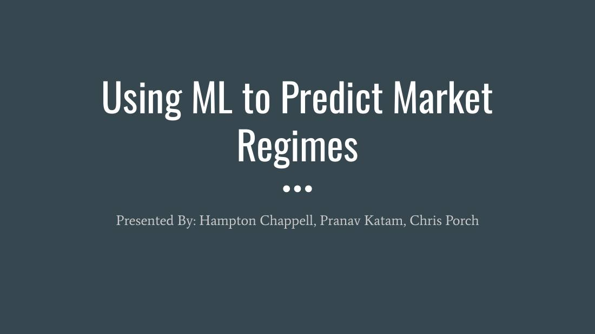
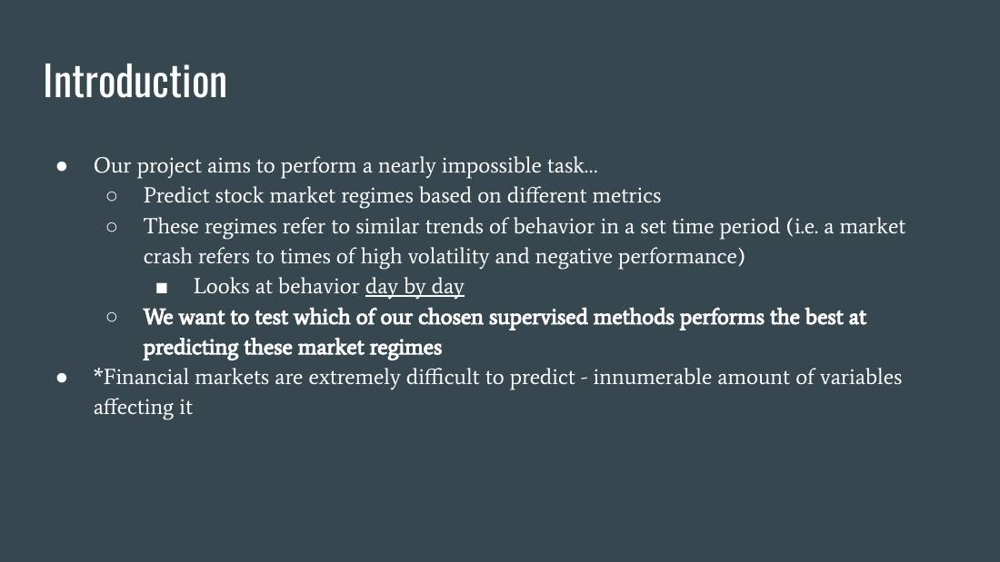
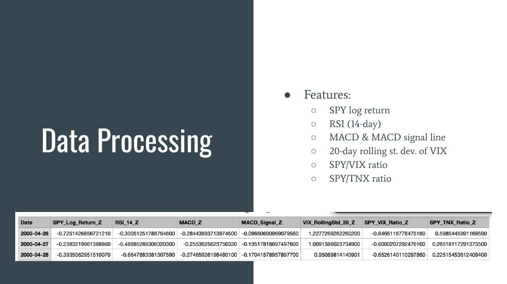
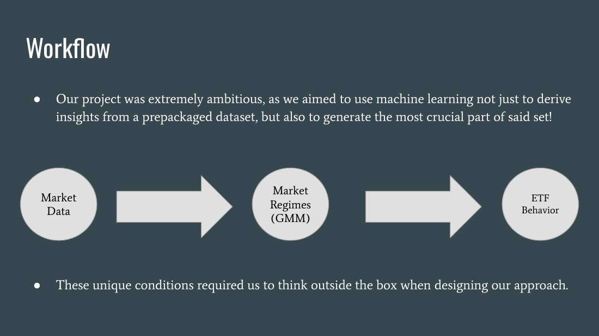
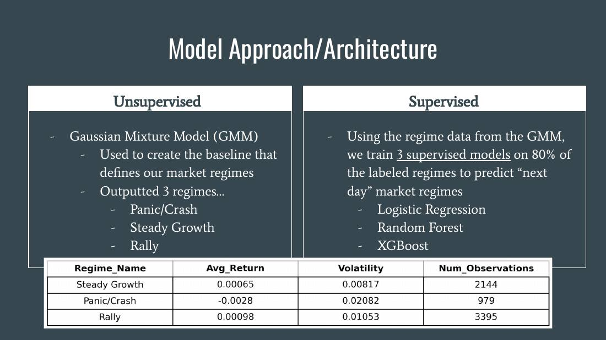
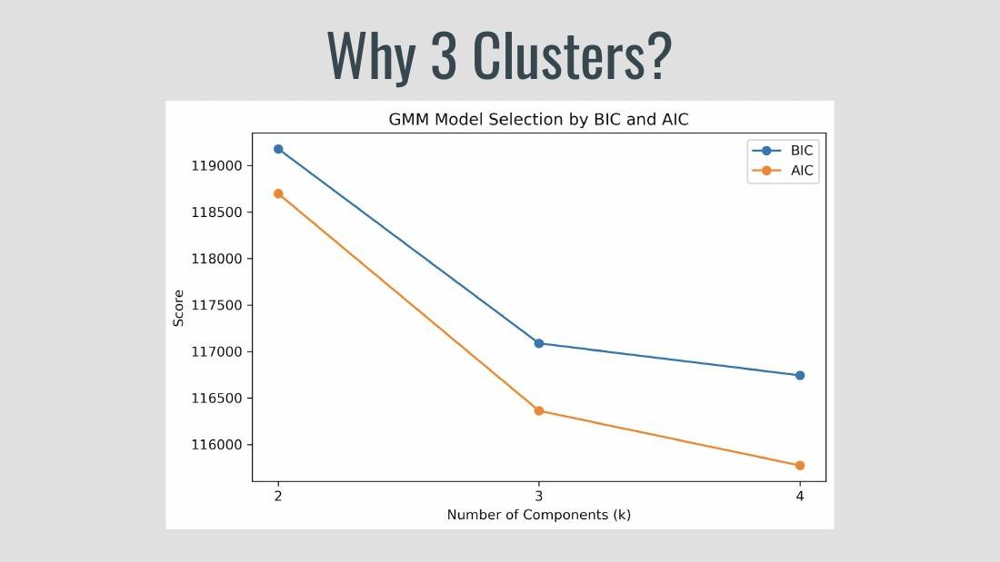
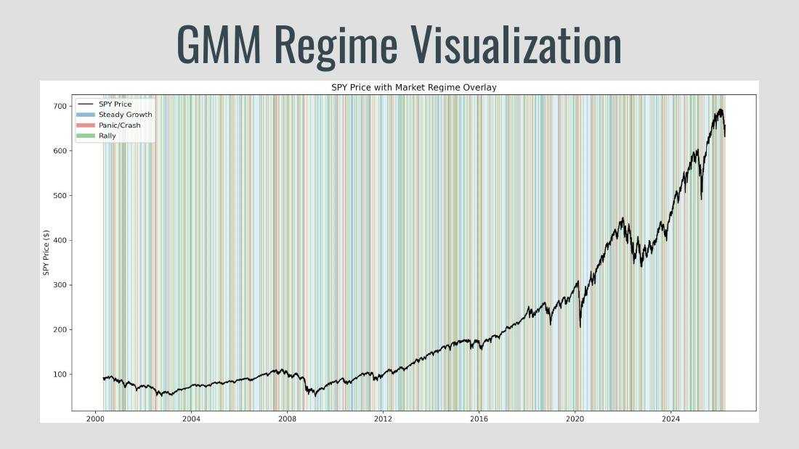
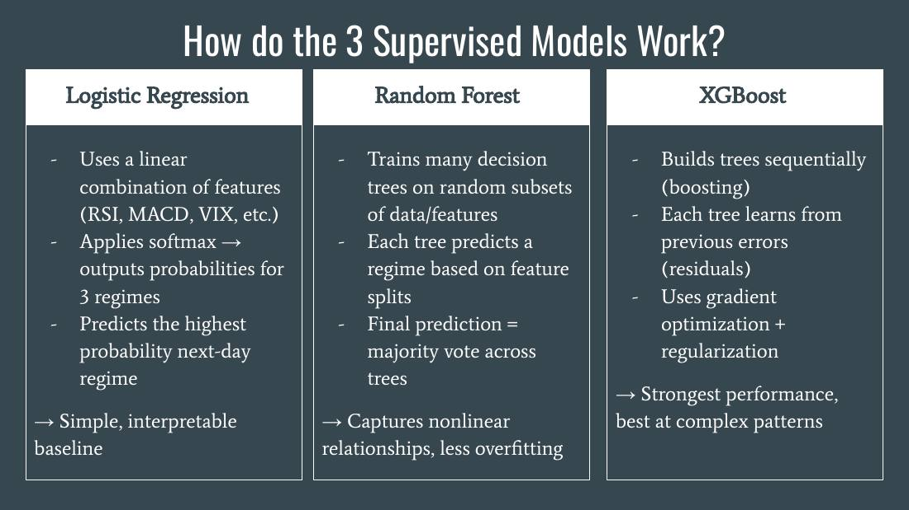
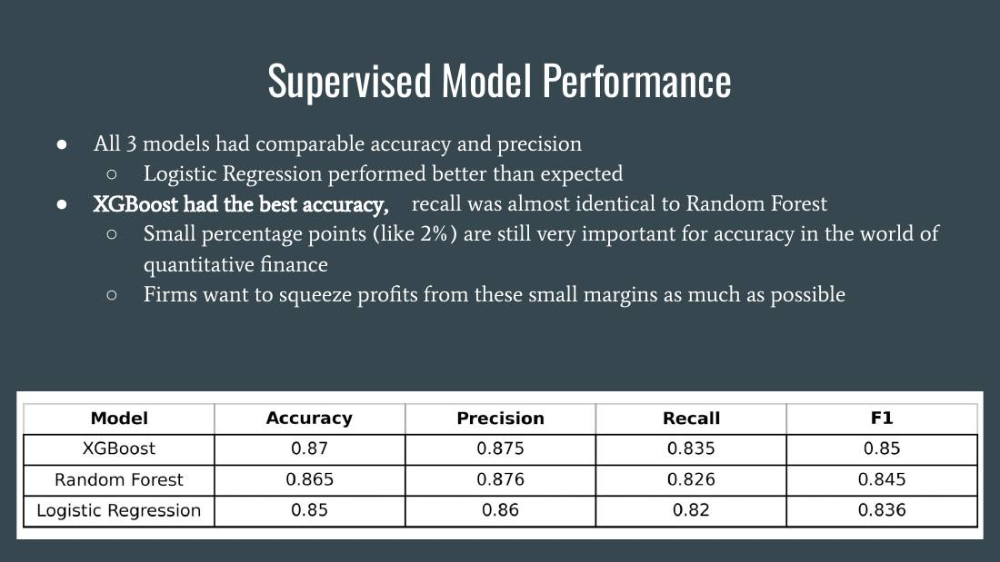
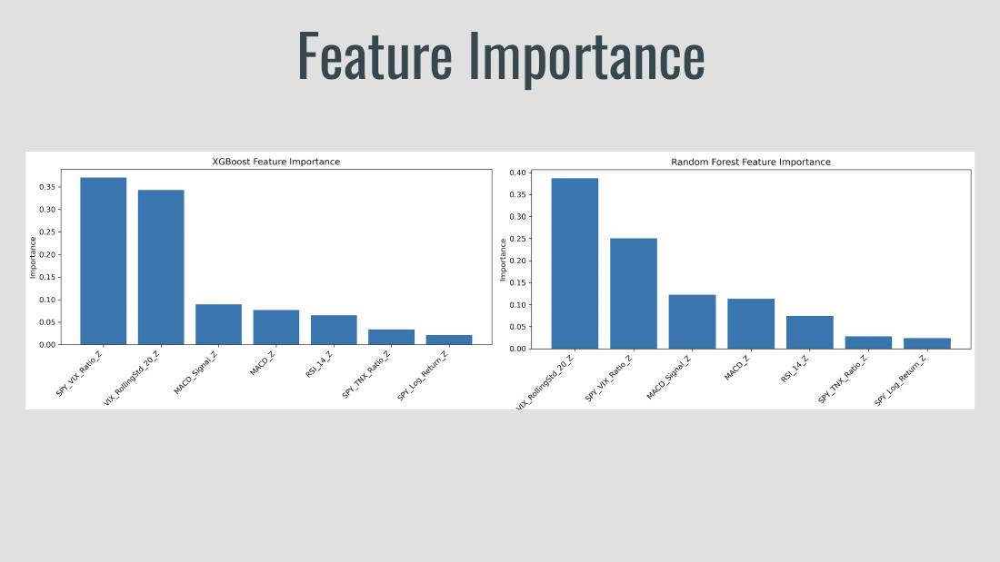
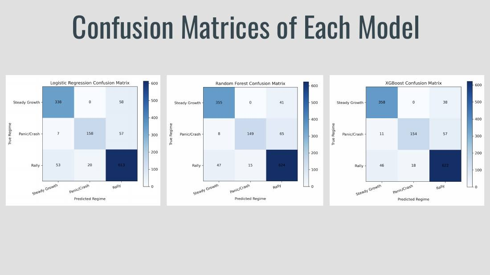
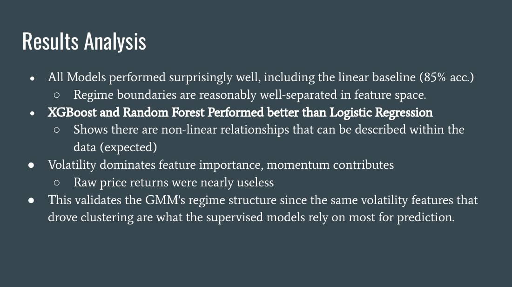
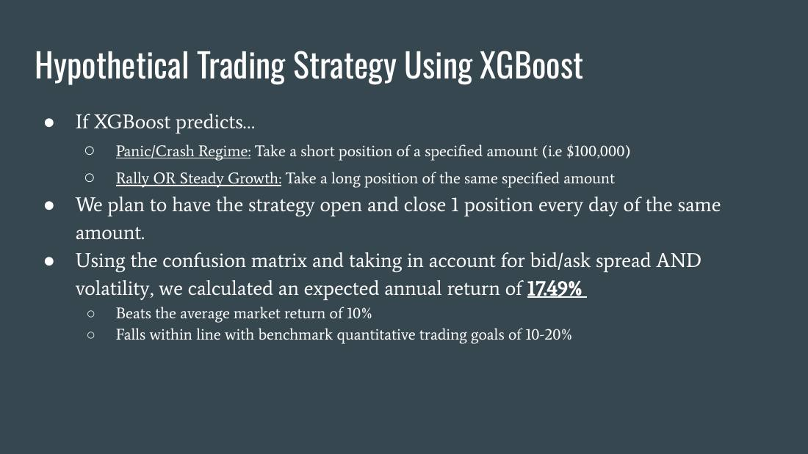
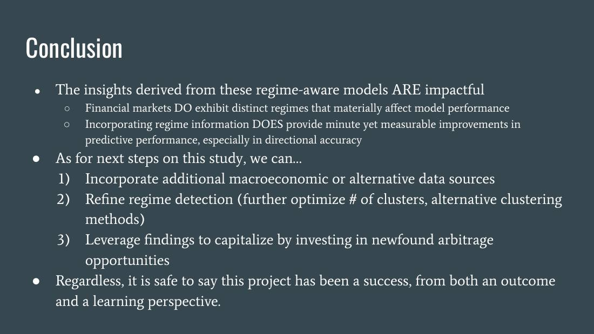
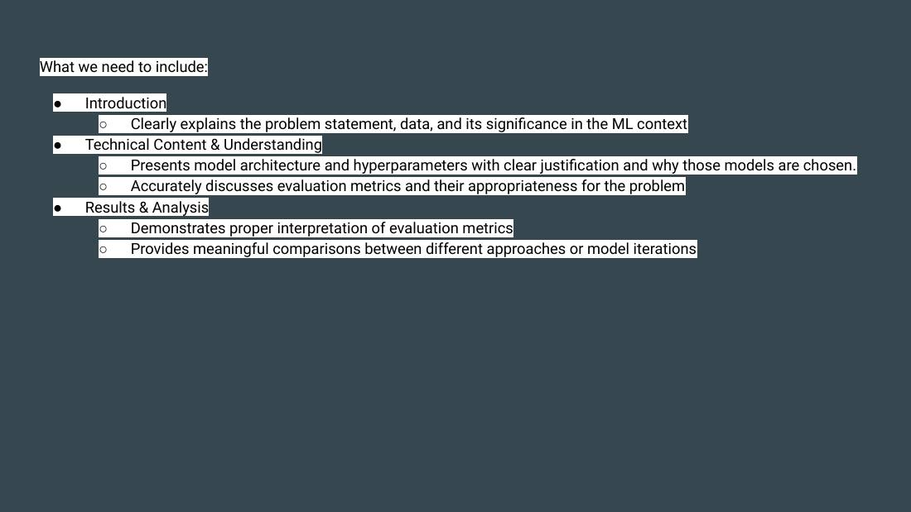